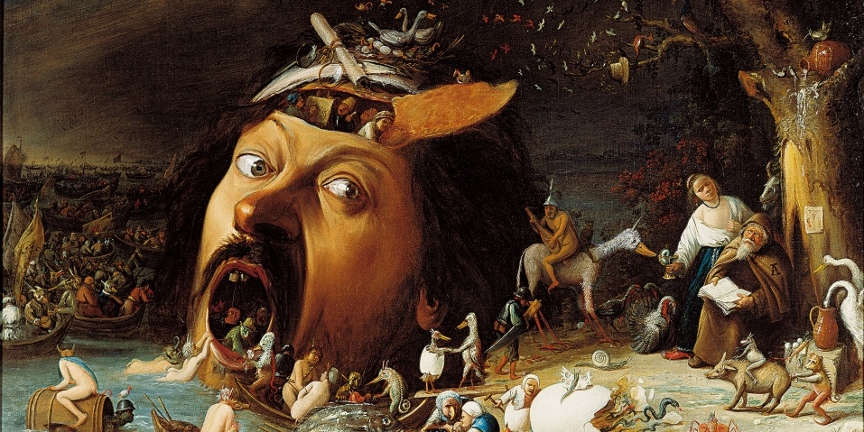

I am an economist, econometrician, data scientist, data engineer, and machine learning engineer. I live in New Orleans with my wife and three cats. I enjoy bourbon, walking, running, my motorcycle, my bicycles, Mardi Gras, and the Milan Lounge.
The Bike: